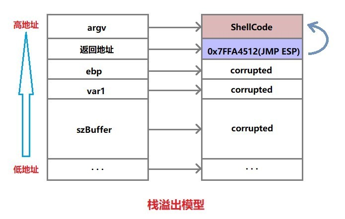
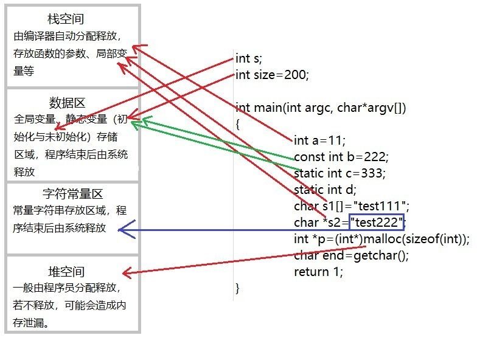

主页
1.1.
前言
1.2.
二进制安全概述
1.3.
基础知识
1.3.1.
编程语言
1.3.1.1.
汇编语言
1.3.1.1.1.
X86
1.3.1.1.2.
ARM
1.3.2.
体系架构
1.3.2.1.
寄存器
1.3.2.1.1.
X86
1.3.2.1.2.
ARM
1.3.2.2.
堆栈
1.3.3.
可执行文件
1.4.
Windows
1.4.1.
安全机制
1.4.1.1.
ASLR
1.4.1.2.
CFG
1.4.1.3.
DEP
1.4.1.4.
GS
1.4.1.5.
SafeSEH
1.4.1.6.
SEHOP
1.4.2.
攻击技术
1.4.2.1.
缓冲区溢出
1.4.2.2.
ROP
1.4.2.3.
Heap Spray
1.4.2.4.
Shellcode
1.4.3.
工具
1.4.3.1.
反汇编器
1.4.3.1.1.
Capstone
1.4.3.2.
反编译器
1.4.3.2.1.
dnSpy
1.4.3.2.2.
ILSpy
1.4.3.3.
静态安全检工具
1.4.3.3.1.
winchecksec
1.4.3.4.
可执行文件工具
1.4.3.4.1.
ExeInfo PE
1.4.3.5.
查壳工具
1.4.3.5.1.
Detect It Easy
1.4.3.5.2.
PEiD
1.4.3.6.
逆向工具
1.4.3.6.1.
IDA
1.4.3.6.2.
Ollydbg
1.4.3.6.3.
WinDbg
1.4.3.7.
内存修改工具
1.4.3.7.1.
CE
1.4.3.7.2.
MHS
1.4.3.7.3.
ModifyMemory
1.5.
附录
1.5.1.
参考资料
本书使用 GitBook 发布
堆栈
堆栈
堆栈
是什么：堆栈都是一种数据项按序排序的数据结构
特点：只能在一端（称为栈顶）对数据项进行插入和删除
堆：队列优先，先进先出
栈：先进后出
功能：暂时存放数据和地址
用途：通常用来保护断电和现场
操作：堆栈中定义了一些操作
两个最重要的是PUSH和POP
PUSH操作：在堆栈的顶部加入一个元素
POP操作：相反，在堆栈顶部移去一个元素，并将堆栈的大小减一
相关安全问题
数组越界访问
堆溢出
栈溢出

堆与栈的分配

results matching "
"
No results matching "
"